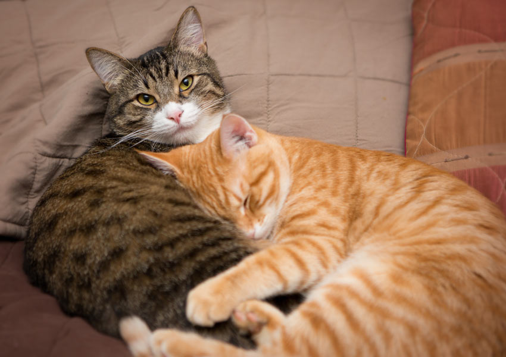
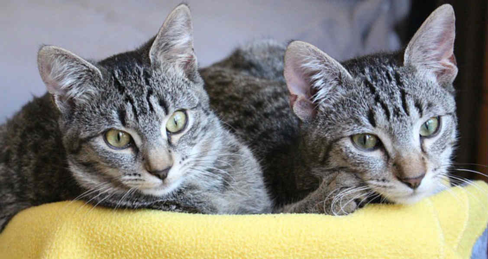

A tail that stretches out from the end of their body. It is covered in hair just the same as their body. It is very flexible and they have many uses too.

Cats are very soft and fluffy animals. They have a tail and soft paws. They purr when feeling love and it is an amazing experience. Cats are very cute and just lovely animals.
A tail that stretches out from the end of their body. It is covered in hair just the same as their body. It is very flexible and they have many uses too.

Paws that look very soft; not only that they actually have extremely fluffy and soft surfaces underneath them. They also hide their claws in them. Paws are very important for cats.

Their ears add extra cuteness to them. They can hear very far away noises with them as they are very sharp. On the face of a single ear there is some hair that prevents from extra dust entering the cat's ears. They are also very soft and bendable.
Overall cats are just an amazing creation and we all love them!
 And we are extremely thankful that they exist and make our everyday lives happier!